Gives concrete latency and quality targets for building a production voice agent pipeline (STT word error rate, LLM time-to-first-token, TTS real-time factor) and specific engineering levers like model size range and co-locating models t...
This traces the cascading STT/LLM/TTS pipeline against the speaker's latency budget and the alternatives teams reach for when the cascade is not enough (ours).
“when humans are having a conversation, we respond to each other's cues in something like 300 milliseconds.”
said at 02:35“it's taking more than 500 milliseconds to respond, you'll start to notice. If it takes a second, if it takes 2 seconds, people will just hang up.”
said at 02:40“state-of-the-art models are typically in the 6% word error rate on open benchmarks.”
said at 05:10“for some of the models that we run on Together, we we get sort of consistently P90 of like 100 milliseconds”
said at 05:40“a good size model typically ends up being in this 8 to 30 billion range.”
said at 08:12“that drop from 75 milliseconds to five basically gets you a 30% reduction in already a fairly optimized voice agent setup”
said at 13:20“The reason why most of these models are not used in production too much is because they have they still have trouble with instruction following and tool calling.”
said at 14:55“we do see customers fine-tune smaller LLMs with their kind of use case specific data so that they can get tool calling quality to go up while remaining a model that is relatively small.”
said at 18:00“this thinker talker pattern where you might have a small LLM that is handling all of the conversation”
said at 21:35The 8-30B parameter ceiling driven by latency budget, not capability, is a useful constraint to flag whenever a vendor pitches a frontier-scale model for a real-time voice product -- the latency math may rule it out before quality does (ours).
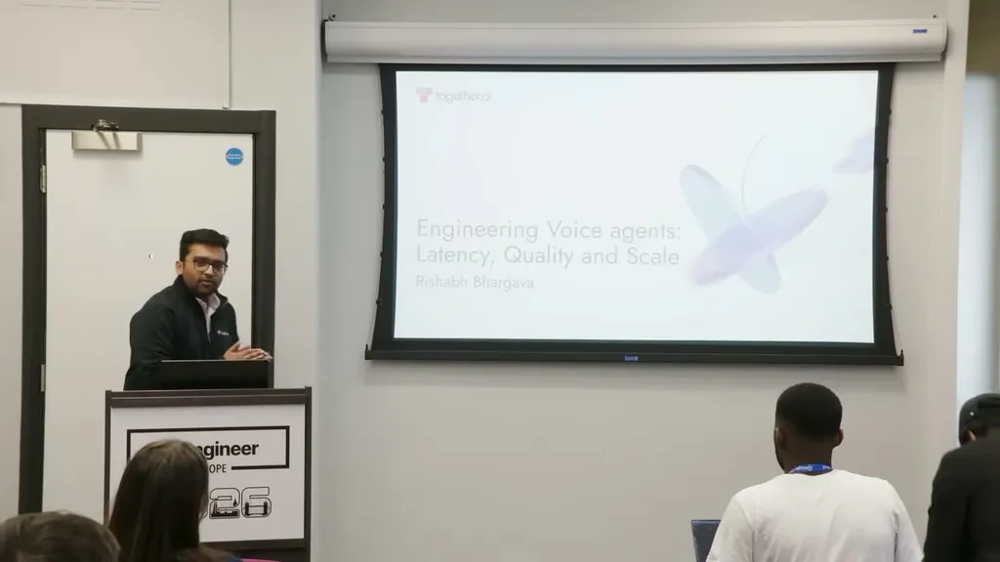
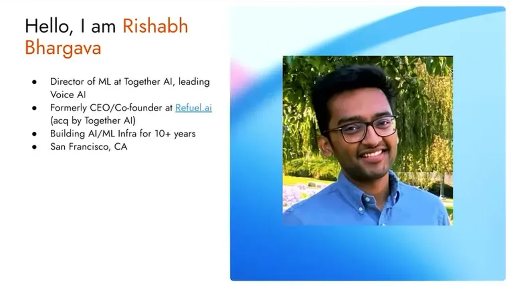
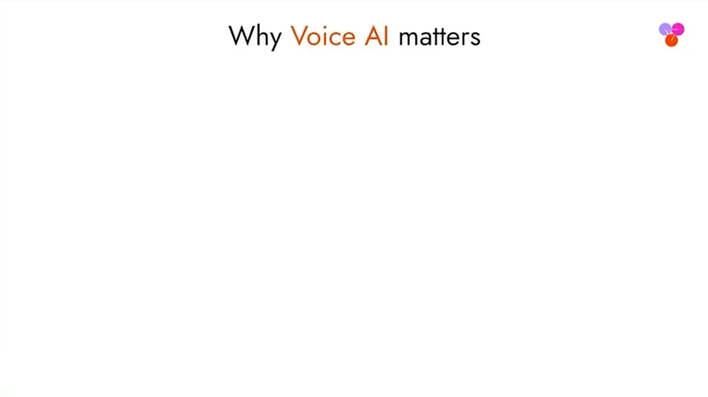
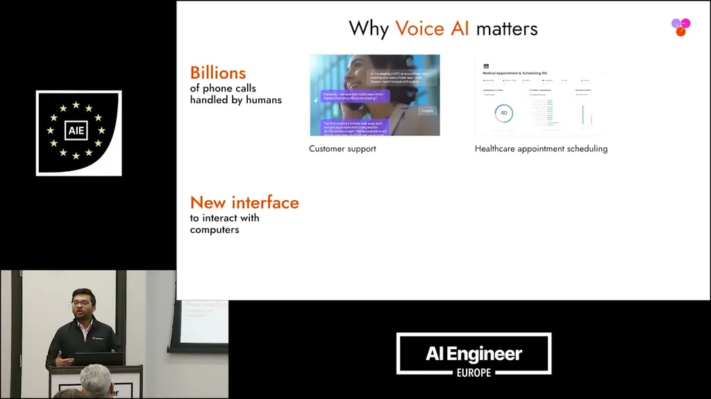
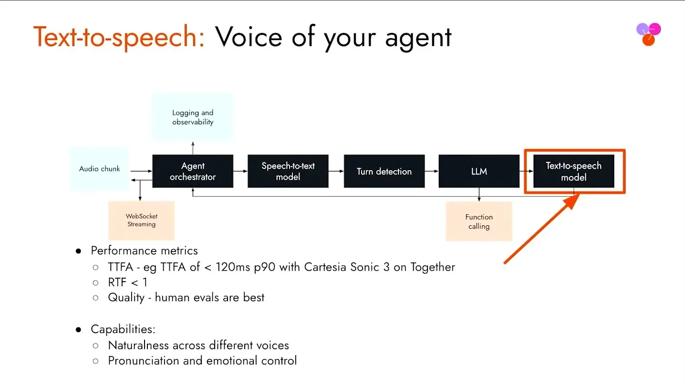
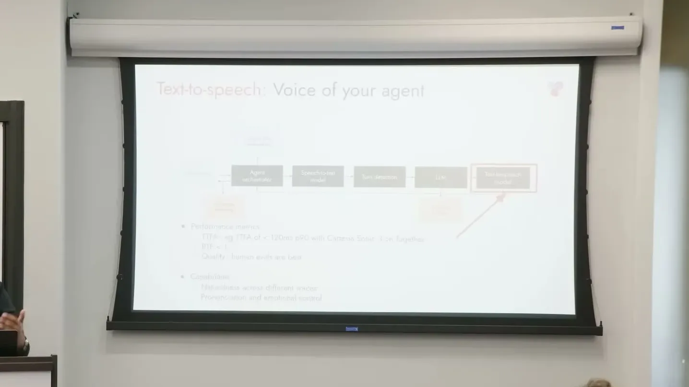
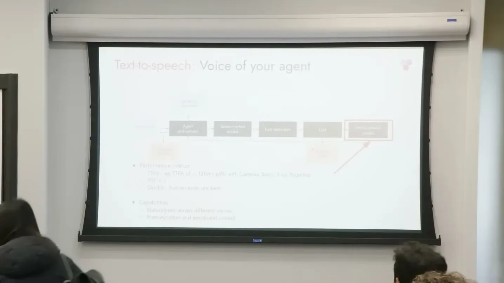
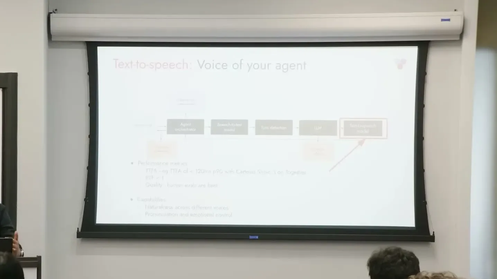
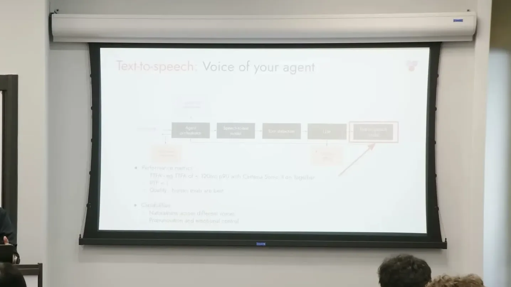
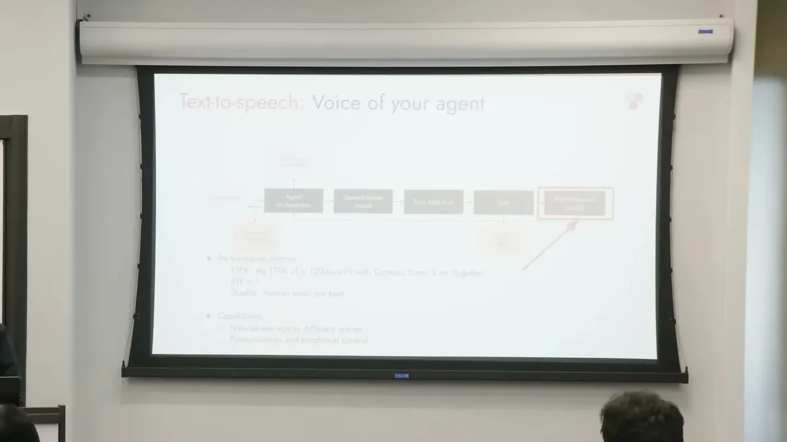
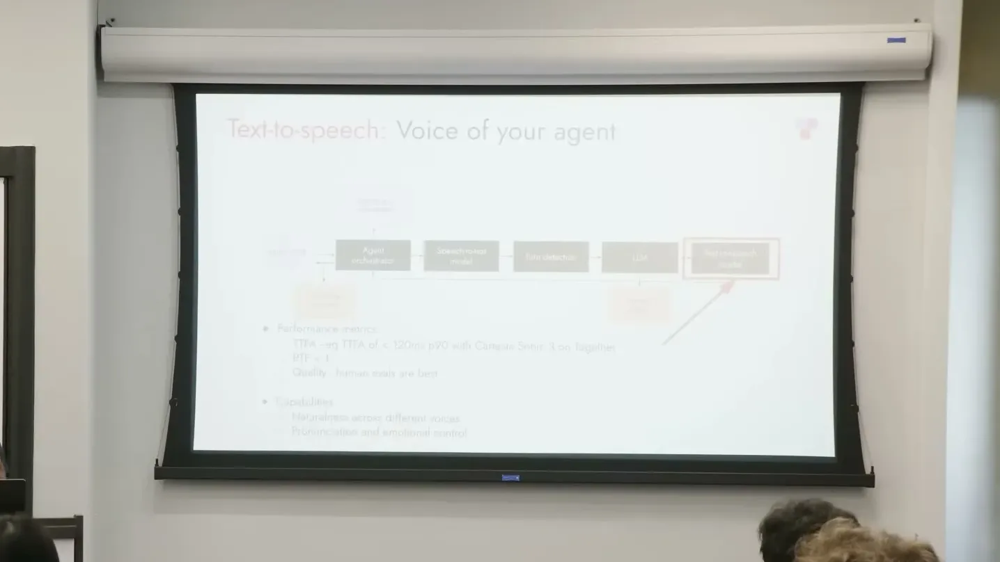
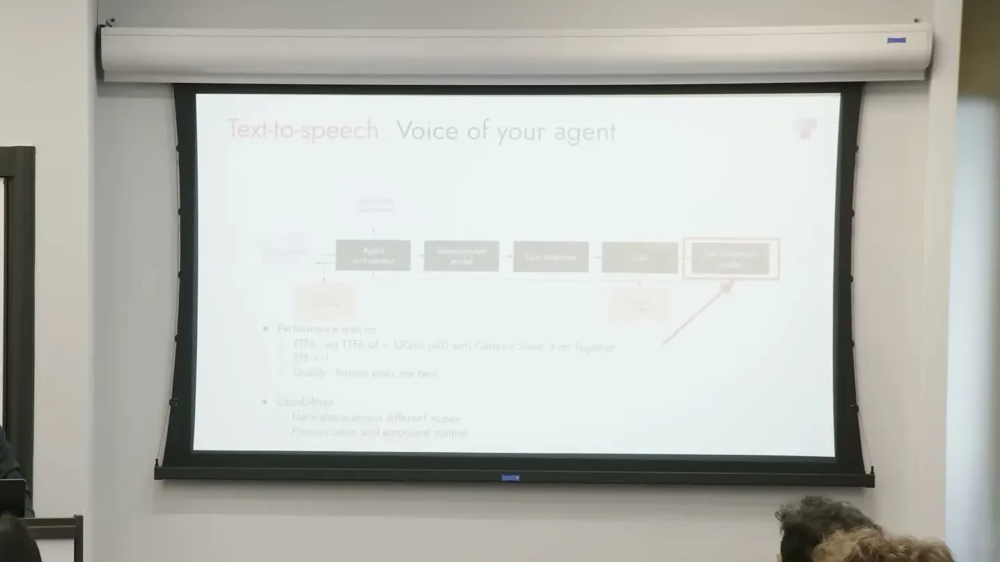
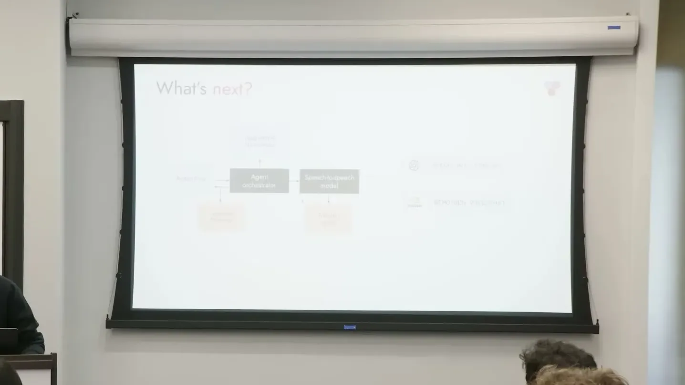
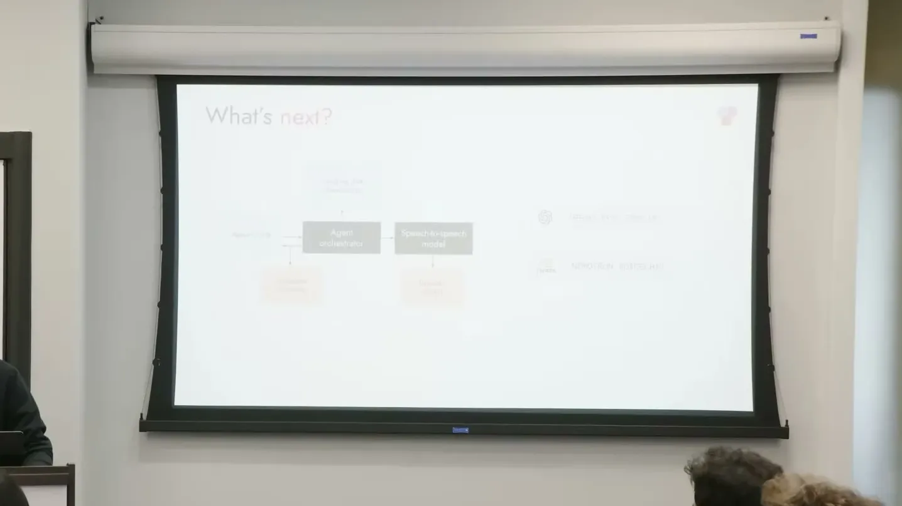
| Stance | Claim | t |
|---|---|---|
| asserts | Humans respond to conversational cues in roughly 300 milliseconds, setting the baseline expectation for agent response time. | 02:35 |
| warns | Agents taking over 500ms become noticeable, and users hang up if response time reaches one to two seconds. | 02:40 |
| asserts | State-of-the-art speech-to-text models run around 6% word error rate on open benchmarks. | 05:10 |
| asserts | Together's STT models achieve a P90 of about 100 milliseconds to complete a transcript after an utterance ends. | 05:40 |
| recommends | The 200-300ms time-to-first-token target for voice agents caps usable LLM size to roughly 8-30 billion parameters. | 08:12 |
| asserts | Co-locating models and orchestrator in the same data center can cut network latency from ~75ms to ~5ms, a 30% reduction overall. | 13:20 |
| warns | Pure speech-to-speech models aren't widely used in production mainly because they still struggle with instruction following and tool calling. | 14:55 |
| recommends | Customers fine-tune smaller LLMs on use-case-specific data to improve tool-calling quality while keeping models within the latency-driven size budget. | 18:00 |
| asserts | Some teams use a thinker-talker pattern where a small LLM handles conversation and hands off to a larger model via a single tool call. | 21:35 |
Machine-readable copy embedded in this page (script#ontology) and in the corpus ontology.